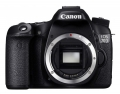
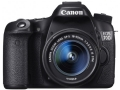
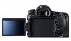
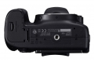
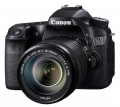
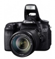
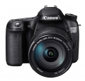
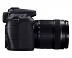
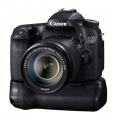
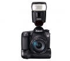

器材库 > APS及其以下画幅可换镜头数码相机 > EOS 70D

规格总览
产品类型
APS画幅可换镜头数码相机
发布日期
2013-07-02
厂家推荐价格
130,000.00 （日元）
影像规格
影像传感器尺寸
22.5×15.0
有效像素
2020万
影像处理器
DIGIC 5+数字图像处理器
色彩空间
sRGB、Adobe RGB
最大解像度
5472 × 3648
静态图像尺寸
L（大）：约2000万像素（5472 × 3648）；M（中）：约890万像素（3648 × 2432）；S1（小1）：约500万像素（2736 × 1824）；S2（小2）：约250万像素（1920 × 1280）；S3（小3）：约35万像素（720 × 480）；RAW ：约2000万像素（5472 × 3648）
静态图像格式
JPEG, RAW, RAW+JPEG
画幅比
3:2
短片尺寸
1920×1080（全高清）：30p/25p/24p；1280×720（高清）：60p/50p；640×480（标清）：30p/25p
短片格式
MOV, MPEG4-AVC/H.264
短片音效
线性PCM
除尘系统
自动、手动、添加除尘数据
镜头和对焦
镜头卡口
Canon EF
兼容镜头
佳能EF系列镜头（包括EF-S系列镜头）（35毫米换算焦距约为镜头焦距的1.6倍）
对焦系统类型
TTL辅助影像重合，相位检测
对焦点
19点（全部为对应F5.6的十字型，中央为对应F2.8的双十字型自动对焦）
对焦模式
单次自动对焦、人工智能伺服自动对焦、人工智能自动对焦、手动对焦
自动对焦点选择
自动, 手动
AF辅助灯
有
手动对焦
支持
曝光控制
测光系统
63区TTL全开光圈测光
测光模式
中央重点测光, 多分区评价测光, 点测光
测光范围
1EV~20EV
曝光模式
P（程序自动曝光）, B门, A（光圈优先自动曝光）, S（快门速度优先自动曝光）, M（手动测光曝光）, SCN特殊场景
图像模式
人像, 风景, 微距, 动体, 夜景人像, 闪光灯关闭, 运动, 创意自动
快门类型
电子控制焦平面快门
快门速度
1/8000至30秒、B门（总快门速度范围。可用范围随拍摄模式各异）、闪光同步速度为1/250秒
曝光补偿
±5EV以1/2、1/3EV级调整
自动曝光锁
有
自动包围曝光
在±3级间以1/3或1/2级为单位调节
ISO感光度
100, 200, 400, 800, 1600, 3200, 6400, 12800
白平衡
日光, 闪光灯, 色温调节, 阴天, 荧光灯, 自定义, 阴影, 自动, 钨丝灯, 预设白平衡, 白平衡包围
自拍
10秒, 2秒
连拍
高速连拍：最高约7张/秒；低速连拍：最高约3张/秒；静音连拍：最高约3张/秒
闪光灯
内置闪光灯
弹出式
闪光模式
E-TTL II
闪光指数
GN 12 (ISO 100)
闪光补偿
±3EV以1/3或1/2EV级调整
外接闪光灯
EX系列闪光灯（能用相机设置功能）
取景器/显示屏
取景器
眼平五棱取景器
取景范围
98%
取景放大倍率
0.95倍
屈光度调节范围
-3.0 ~ +1.0
反光镜
快速瞬回半透明
反光镜锁定
有
取景器信息
自动对焦信息：对焦点、对焦确认指示灯；曝光信息：快门速度、光圈、手动曝光、曝光范围、ISO感光度设置、曝光补偿、曝光警告； 闪光信息：闪光灯预备、FP闪光、FE曝光锁、闪光曝光补偿；JPEG 格式、可拍摄数量、CF卡信息
景深预视
有
LCD类型
TFT LCD
LCD尺寸
3.0英寸
LCD像素
104万
视野率
100%
LCD特性
触摸屏, 翻转屏
亮度调节级数
手动（7级）
Live View
有
Live View 显示
两种类型网格线
Live View 对焦模式
实时模式、面部优先实时模式（反差检测） 快速模式（相差检测） 手动对焦（能放大5倍/10倍）
文件输入/输出
存储卡
SD/SDHC, SDXC
视频/音频接口
HDMI Mini 输出
无线功能
Wi-Fi
电源
电池
电池LP-E6 （一节）
续航能力
使用取景器拍摄：23℃时约920张、0℃时约850张；使用实时显示拍摄：23℃时约210张、0℃时约200张
外接电源
电池手柄BG-E14
机身规格
颜色
黑色
尺寸
139.0 × 104.3 × 78.5mm
重量
675g
其它
配件端口
遥控线, 热靴
工作温度
0°C - 40°C / 32°F - 104°F℃
工作湿度
85％或更小%
备注
内置Wi-Fi功能
禽流感人2014-10-14 09:234.19 分
操作性 4.50功能性 4.50美观性 4.00趣味性 4.00耐用性 4.00性价比 4.50解像力 4.00色彩还原 4.00
禽流感人2014-10-14 09:00
youngzh2014-10-07 14:465 分
操作性 5.00功能性 5.00美观性 5.00趣味性 5.00耐用性 5.00性价比 5.00解像力 5.00色彩还原 5.00
小广咪咪2014-07-16 18:444.38 分
操作性 4.00功能性 4.50美观性 5.00趣味性 4.50耐用性 4.50性价比 4.00解像力 4.00色彩还原 4.50
我是阿弯2013-11-06 21:044.5 分
操作性 4.50功能性 4.50美观性 4.50趣味性 4.50耐用性 4.50性价比 4.50解像力 4.50色彩还原 4.50
青春飞扬19712013-09-24 08:404.75 分
操作性 4.50功能性 5.00美观性 5.00趣味性 5.00耐用性 4.50性价比 5.00解像力 4.50色彩还原 4.50
Aurura2013-09-14 10:544.94 分
操作性 5.00功能性 5.00美观性 5.00趣味性 5.00耐用性 5.00性价比 4.50解像力 5.00色彩还原 5.00
thinford2013-08-27 21:224.13 分
操作性 4.50功能性 4.00美观性 5.00趣味性 4.50耐用性 4.00性价比 4.00解像力 3.00色彩还原 4.00
bbbb22102013-08-22 10:494 分
操作性 4.50功能性 4.50美观性 4.00趣味性 4.00耐用性 4.00性价比 4.50解像力 3.00色彩还原 3.50
teslaroadster2013-07-04 19:03
海云潇2013-07-03 07:47
产品图 / 样片









评测 / 相关文章
- 详细内容 （存档）
- 对焦就是快 佳能EOS 70D评测 （存档）
- ［资讯］探秘EOS传奇（上） （存档）
- ［资讯］佳能EOS 70D真机外观图赏 （存档）
- ［试用］海外评测：佳能EOS 70D(β版)初体验 （存档）
- ［资讯］首款CMOS相差AF单反 点评佳能EOS 70D （存档）
- ［资讯］佳能EOS 70D官方样张欣赏 （存档）
- ［资讯］EOS 70D挑战单反新标准 （存档）
相关文章
- ［试用］旅行好帮手 EOS 70D行摄日记 （原站已下线）
- ［资讯］探秘EOS传奇（上） （存档）
- ［试用］对焦就是快 佳能EOS 70D评测 （存档）
- ［资讯］佳能EOS 70D真机外观图赏 （存档）
- ［试用］海外评测：佳能EOS 70D(β版)初体验 （存档）
- ［资讯］首款CMOS相差AF单反 点评佳能EOS 70D （存档）
- ［资讯］佳能EOS 70D官方样张欣赏 （存档）
- ［资讯］佳能EOS 70D （存档）
- ［资讯］EOS 70D挑战单反新标准 （存档）